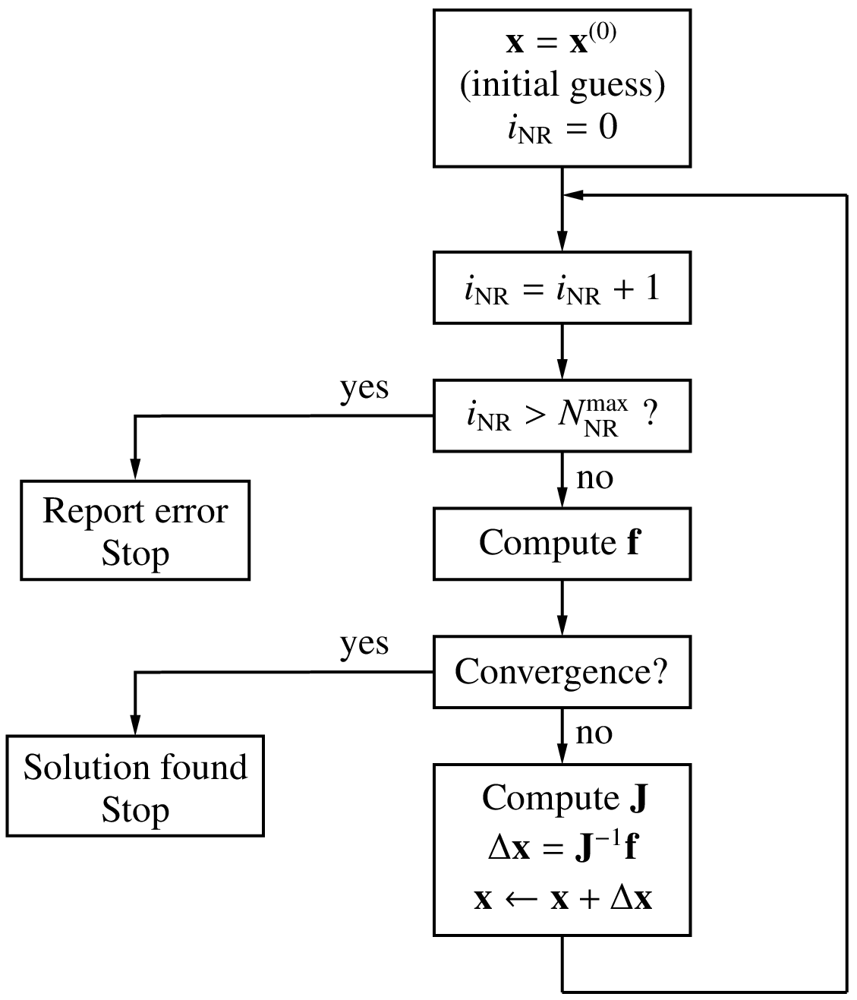

Newton-Raphson method¶
Nonlinear equations arise in a wide variety of electronic and power electronic circuits, and they need to be solved using an iterative method. The Newton-Raphson (NR) iterative method is commonly used for solving nonlinear equations because of its excellent convergence properties. GSEIM also employs the NR method, and it would be useful for GSEIM users to be familiar with the functioning of the NR method.
To begin with, let us see where the NR method comes from.
Single equation¶
Consider the equation \(f(x) = 0\). Let \(x = r\) be the root (assumed to be single and real), i.e., \(f(r) = 0\). Let us say that we have some idea of the root in the form of an initial guess \(x^{(0)}\). The goal of the NR method is to iteratively refine this value so that \(f(x) = 0\) is satisfied to a higher accuracy with every NR iteration. We denote the successive values of \(x\) by \(x^{(0)}\), \(x^{(1)}\), \(x^{(2)}\), \(\cdots\)
Consider \(x = x^{(i)}\). Expanding \(f(x)\) around this value, we get
We seek the value of \(\Delta x^{(i)}\) which will satisfy \(f(x^{(i)} + \Delta x^{(i)}) = 0\), assuming that the contribution from second- and higher-order terms is small compared to the first term, i.e.,
If our assumption (that only the first term in \(\Delta x^{(i)}\) is significant) is indeed valid, our job is done: we simply add \(\Delta x^{(i)}\) to \(x^{(i)}\), and that gives us the solution. If not, we treat \(x^{(i)}+\Delta x^{(i)}\) as the next candidate for \(x\) (i.e., \(x^{(i+1)} = x^{(i)}+\Delta x^{(i)}\)), perform another NR iteration, and so on. Let us illustrate this procedure with an example.
Consider \(f(x)\) given by
with \(a_3\hspace{-1mm}=\hspace{-1mm}1\), \(a_2\hspace{-1mm}=\hspace{-1mm}-3.2\), \(a_1\hspace{-1mm}=\hspace{-1mm}8.7\), \(a_0\hspace{-1mm}=\hspace{-1mm}-14.3\).
The equation \(f(x) = 0\) has a real root at \(x = 2.2\) as seen in the following figure.
{kind=link}
The following C++ program performs NR iterations to obtain the root.
1 2 3 4 5 6 7 8 9 10 11 12 13 14 15 16 17 18 19 20 21 22 23 24 25 26 27 28 29 30 31 32 | #include <iostream>
#include <iomanip>
#include <math.h>
using namespace std;
int main ()
{
double x,f,dfdx,delx,tolr,r;
double a3,a2,a1,a0;
double x2,x3;
a3 = 1.0; a2 = -3.2; a1 = 8.7; a0 = -14.3;
x = 4.0; // initial guess
tolr = 1.0e-8; // tolerance
r = 2.2; // actual solution
for (int i=0; i < 10; i++) {
x2 = x*x; x3 = x2*x; // powers of x
f = a3*x3 + a2*x2 + a1*x + a0; // function
dfdx = 3.0*a3*x2 + 2.0*a2*x + a1; // derivative
delx = -f/dfdx; // correction delta_x
cout << std::setw(2) << i << " ";
cout << std::scientific;
cout << x << " " << f << " " << delx << " " << (x-r) << endl;
if (fabs(f) < tolr) break; // tolerance met; exit loop
x = x + delx; // update x
}
return 0;
}
|
The output of the program is shown below.
| \(i\) | \(x^{(i)}\) | \(f(x^{(i)})\) | \(\Delta x^{(i)}\) | \((x^{(i)}-r)\) |
|---|---|---|---|---|
| 0 | \(4.000000\times 10^{0}\) | \(3.330000\times 10^{1}\) | \(-1.070740\times 10^{0}\) | \(1.800000\times 10^{0}\) |
| 1 | \(2.929260\times 10^{0}\) | \(8.861467\times 10^{0}\) | \(-5.646248\times 10^{-1}\) | \(7.292605\times 10^{-1}\) |
| 2 | \(2.364636\times 10^{0}\) | \(1.601388\times 10^{0}\) | \(-1.548606\times 10^{-1}\) | \(1.646356\times 10^{-1}\) |
| 3 | \(2.209775\times 10^{0}\) | \(8.966910\times 10^{-2}\) | \(-9.739489\times 10^{-3}\) | \(9.774978\times 10^{-3}\) |
| 4 | \(2.200035\times 10^{0}\) | \(3.243738\times 10^{-4}\) | \(-3.548854\times 10^{-5}\) | \(3.548901\times 10^{-5}\) |
| 5 | \(2.200000\times 10^{0}\) | \(4.282173\times 10^{-9}\) | \(-4.685091\times 10^{-10}\) | \(4.685092\times 10^{-10}\) |
Note how quickly the NR process converges to the root. After three iterations, we already have an accuracy of 0.44%. This rapid convergence is the reason for the popularity of the NR method. Near convergence, the “errors” for iterations \(i\) and \((i+1)\) are related by
where \(\epsilon^{(i)} = \left|x^{(i)}-r\right|\) is the deviation of \(x^{(i)}\) from the root \(r\). The factor \(k \approx g''(r)/2\), i.e., \(\displaystyle\frac{1}{2}\left.\displaystyle\frac{d^2f}{dx^2}\right|_{x=r}\). Eq. (61) explains why the error goes down so dramatically as the NR process converges. Because of the second power in Eq. (61), the NR process is said to have quadratic convergence.
Extension to set of equations¶
The NR method can be generalised to a system of \(N\) equations in \(N\) variables given by
In this case, we define a solution vector,
We start with an initial guess for the solution vector, i.e., \(x_1^{(0)}\), \(x_2^{(0)}\), \(\cdots\), \(x_N^{(0)}\). Note that, in practice, it is often difficult to come up with a good initial guess, and in the absence of a better alternative, \(x_1^{(i)} = 0\), \(x_2^{(i)} = 0\), \(\cdots\) may be used. The correction vector in the \(i^{\mathrm{th}}\) iteration, \(\Delta {\bf{x}}^{(i)}\) is computed as
where
and the functions and derivatives are evaluated at the current values, \(x_1^{(i)}\), \(x_2^{(i)}\), \(\cdots\), \(x_N^{(i)}\). The NR procedure is otherwise similar to that for the one variable case, as seen in the flow-chart below.
{kind=link}
Convergence criteria¶
In the NR method, we need to set a “convergence criterion” to determine
when to stop the NR iterations. In the program given in the
single equation section, for example, the variable
tolr (tolerance) served this purpose.
The following convergence criteria are commonly used.
Norm of \({\bf{f}}\): In this case, we check if the function values are small. Typically, the 2-norm, defined as
\(||\,{\bf{f}}\,||_2 = \left[\displaystyle\sum_{i=1}^{N}f_i^2\right]^{1/2}\),
is computed, and the NR iterations are said to converge if \(||{\bf{f}}||_2 < \epsilon\), a suitable tolerance value. This is an absolute convergence criterion since our goal is precisely to solve the set of equations to get \(f_i = 0\) (for each \(i\)) which means in practice that \(|f_i|\) (or somewhat equivalently, the 2-norm) should be made as small as possible.
\(\Delta{\bf{x}}\) norm: Here, we check if each component of the correction vector is sufficiently small relative to its current value, i.e., \(|\Delta x_i| < \epsilon \,|x_i|\). This is a relative criterion and is based on the fact that, as the NR process converges, \(\Delta x_i\) become smaller, as we have seen in the one-variable example.
SPICE convergence criterion: In SPICE, a tolerance is computed for each variable as follows:
(66)¶\[\tau _i = k_{\mathrm{rel}}\times {\textrm{max}} \left( |x_i^{(k)}|, |x_i^{(k+1)}| \right) + \tau _{\mathrm{abs}},\]where \(k_{\mathrm{rel}}\) (typically 0.001) and \(\tau _{\mathrm{abs}}\) are constants, and \(x_i^{(k)}\) denotes the value of \(x_i\) in the \(k^{\mathrm{th}}\) iteration. The first term specifies a relative tolerance while the second term is an absolute tolerance. If \(x\) is of type voltage, \(\tau _{\mathrm{abs}}\) may be \(0.01\,{\textrm{mV}}\), for example. Convergence is said to be attained if
(67)¶\[|x_i^{(k+1)}-x_i^{(k)}| < \tau _i. \label{eq_nr_spice_2}\]SPICE uses the term
RELTOLfor \(k_{\mathrm{rel}}\),VNTOLfor \(\tau _{\mathrm{abs}}\) for node voltage variables, andABSTOLfor \(\tau _{\mathrm{abs}}\) for currents. In a variety of electronic circuits, the tried and tested SPICE convergence criterion is found to work well.
Why are there so many different convergence criteria? Isn’t there a simple “universal” convergence criterion which we can use for all problems? To answer this question, let us take a closer look at convergence of the NR process.
As we have seen earlier, the “error,” i.e., the difference between the numerical solution and the actual solution, goes down dramatically with each iteration, as the NR process converges. If our computer had infinite precision, the error can be reduced to arbitrarily small values by performing additional NR iterations. In practice, computers have a finite precision. With single-precision (32-bit) numbers, the smallest number that can be represented is about \(10^{-38}\), and the largest number is about \(10^{+38}\). With double-precision (64-bit) numbers, the smallest and largest numbers are about \(10^{-308}\) and \(10^{+308}\), respectively. Furthermore, because of the finite number of bits used for the mantissa, only a finite number of real numbers can be represented, say, \(r_1\), \(r_2\), \(r_3\), \(\cdots\) Any number falling between \(r_k\) and \(r_{k+1}\) is rounded off to \(r_k\) or \(r_{k+1}\), leading to a “round-off error” which is of the order of \(10^{-7}\) for single-precision numbers and \(10^{-16}\) for double-precision numbers.
The round-off error, however small, is finite, and it limits the accuracy that we can achieve with the NR method. If our convergence check is too stringent, convergence will not be attained, and the NR process will get terminated with an error message (although the solution may already be sufficiently accurate). If it is too loose, we end up with the wrong solution. Setting an appropriate convergence criterion is therefore crucial in implementing the NR method, as illustrated in the following example.
Consider the systems of equations,
Clearly, the solution would not depend on \(k\) since it is simply a scaling factor. We want to solve this system of equations with the initial guess \(x_1 = 1\), \(x_2 = 1\). With this initial guess, the NR method converges to the solution \(x_1 = \sqrt{3}\), \(x_2 = 5\sqrt{3}\). (Note that the above system of equations actually has another solution; but only the solution \(x_1 = \sqrt{3}\), \(x_2 = 5\sqrt{3}\) is relevant for our discussion, considering the initial guess we have used.)
The \(||{\bf{f}}||_2\) norm at each NR iteration obtained using
single-precision (float) numbers is shown in the following table.
| i | \(||{\bf{f}}||_2\) | |
|---|---|---|
| \(k = 1\) | \(k = 10^5\) | |
| 0 | 5.464824e+01 |
8.392304e+05 |
| 1 | 7.306992e+01 |
7.306991e+01 |
| 2 | 6.915764e+02 |
6.915771e+02 |
| 3 | 1.559785e+02 |
1.559788e+02 |
| 4 | 2.633286e+01 |
2.633291e+01 |
| 5 | 1.710737e+00 |
1.710923e+00 |
| 6 | 9.535313e-03 |
2.567794e-02 |
| 7 | 7.662848e-06 |
7.152557e-02 |
| 8 | 2.870940e-06 |
2.384186e-02 |
| 9 | 2.870940e-06 |
2.384186e-02 |
We can see that \(||{\bf{f}}||_2\) reduces as the NR process converges to the solution, but after some point (iteration 8), it does not reduce any further. With \(k = 1\) in Eq. (68), the smallest value attained by \(||{\bf{f}}||_2\) is \(2.87\times 10^{-6}\), whereas with \(k = 10^5\), it is \(2.38\times 10^{-2}\), which is four orders larger.
Does it mean that the solution we obtain with \(k = 10^5\) is less accurate? In the following table, let us look at how \(x_1\) and \(x_2\) evolve.
| i | \(k = 1\) | \(k = 10^5\) | ||
| \(x_1\) | \(x_2\) | \(x_1\) | \(x_2\) | |
| 0 | 1.000000e+00 |
1.000000e+00 |
1.000000e+00 |
1.000000e+00 |
| 1 | -6.916087e-01 |
1.108391e+01 |
-6.916087e-01 |
1.108391e+01 |
| 2 | 8.074338e+00 |
2.317966e+00 |
8.074343e+00 |
2.317963e+00 |
| 3 | 3.911292e+00 |
6.481012e+00 |
3.911294e+00 |
6.481010e+00 |
| 4 | 2.200773e+00 |
8.191531e+00 |
2.200774e+00 |
8.191530e+00 |
| 5 | 1.764788e+00 |
8.627517e+00 |
1.764789e+00 |
8.627516e+00 |
| 6 | 1.732234e+00 |
8.660070e+00 |
1.732234e+00 |
8.660070e+00 |
| 7 | 1.732051e+00 |
8.660254e+00 |
1.732051e+00 |
8.660254e+00 |
| 8 | 1.732051e+00 |
8.660254e+00 |
1.732051e+00 |
8.660254e+00 |
| 9 | 1.732051e+00 |
8.660254e+00 |
1.732051e+00 |
8.660254e+00 |
We see that, after iteration 6, there is no difference between \(k = 1\) and \(k = 10^5\), and in fact these values coincide with the expected solution (\(x_1 = \sqrt{3}\), \(x_2 = 5\sqrt{3}\)) up to six decimal places. In practice, we would be fine with this level of accuracy.
Clearly, if the 2-norm is used as the convergence criterion, it needs to be carefully assigned. In the above example, a 2-norm of \(10^{-3}\) will work (i.e., the NR process will exit after attaining convergence) for \(k = 1\), but not with \(k = 10^5\). This means that selection of the convergence criterion must be made differently for different problems! In reality, the situation is not so hopeless. For example, if we are only interested in power electronic circuits, the default values provided by GSEIM for the SPICE convergence criteria would generally work well and may need to be tweaked only for a few specific simulations.
Graphical interpretation of the NR process¶
In the one-variable case, the NR process has a useful graphical interpretation. The correction \(\Delta x^{(i)}\) in the \(i^{\mathrm{th}}\) NR iteration is given by
Since \(\left.\displaystyle\frac{df}{dx}\right|_{x^{(i)}}\) is the slope of the \(f(x)\) curve at \(x = x^{(i)}\), the magnitude of \(\Delta x^{(i)}\) is given by drawing a tangent at the point \((x^{(i)},f(x^{(i)}))\) and extending it to the \(x\)-axis, as shown below.
{kind=link}
\(x^{(i+1)} = x^{(i)} + \Delta x^{(i)}\) is then obtained by simply going from \(x^{(i)}\) in the negative \(x\)-direction if the sign of \(\left.\displaystyle\frac{df}{dx}\right|_{x^{(i)}}\) is positive (and vice versa) a distance of \(\Delta x^{(i)}\). This leads to the following interpretation of the NR process.
- Draw a tangent at \((x^{(i)},f(x^{(i)}))\).
- Extend the tangent to the \(x\)-axis.
- The point of intersection of the tangent with the \(x\)-axis gives the next values of \(x\), i.e., \(x^{(i+1)}\).
The NR process for Eq. (60) is shown in the following figure. It is easy to see that, if \(f(x)\) is linear (i.e., \(f(x) = k_1x+ k_2\)), the NR process will converge in exactly one iteration.
{kind=link}
Convergence issues¶
We have seen that the NR method has the desirable property of rapid convergence. The big question is whether it will always converge. The answer, unfortunately, is no. Convergence of the NR method is guaranteed only if the initial guess is “sufficiently” close to the solution (root). In the one-variable case, it can be shown that, if
for some interval \((x_1,x_2)\) containing the root \(r\), the NR method will converge for an initial guess \(x^{(0)}\) lying in that interval. If not, the NR process may not converge.
As an example, consider
For this function,
The plots of (a) \(f(x)\) and (b) \(f_1(x)\) for \(a = 1.5\) are shown below.
{kind=link}
For \(|f_1(x)| < 1\), we need \(0.735 < x < 2.265\). If the initial guess is within this range, the NR process for \(f(x)\) is guaranteed to converge as seen in this example:
{kind=link}
If the initial guess is outside the range \(0.735 < x < 2.265\), the NR process is not guaranteed to converge. For example, in the figure below, we can clearly see that the NR process is diverging, i.e., the solution is moving away from the root with every iteration.
{kind=link}
An equally catastrophic situation, in which the NR process oscillates around the root, is shown below.
{kind=link}
Failure of the NR procedure is not a hypothetical calamity; it is a very real possibility in circuit simulation. Fortunately, some clever ways have been devised to nudge the NR process toward convergence as discussed in the following.
Damping of the NR iterations¶
Consider the one variable case. As we have seen earlier, the NR method is related to the Taylor series of the function around the current value \(x^{(i)}\):
If the higher-order terms are small, the NR method is expected to work well. Convergence problems can arise when they are not small. To be specific, let us look at this Divergence example in which the NR process diverges. The slope at \((x^{(i)},f(x^{(i)}))\) corresponds to the first term of the Taylor series, and the curvature is due to the higher-order terms. We note that the slope does take us in the correct direction (i.e., toward the root), but because of the curvature, we may end up going too far in that direction. The idea behind damping of the NR process is to play it safe and go only part of the way.
In the standard NR process, the correction vector is computed as \(\Delta x^{(i)} = -\left[{\bf{J}}^{(i)}\right]^{-1}{\bf{f}}^{(i)}\) and is added to the current solution vector to obtain the next guess:
We can dampen or slow down the NR process by adding only a fraction of the correction vector, i.e.,
where \(k\) is the damping factor.
The following figure shows the effect of damping for the Divergence example with the same initial guess, viz., \(x^{(0)} = 0\). In each iteration, we draw a tangent at \((x^{(i)},f(x^{(i)}))\) as before, but instead of going all the way to the intercept with the \(x\)-axis (the dashed line), we go only a fraction of the way to obtain the next iterate \(x^{(i+1)}\). The NR process is now seen to converge to the solution.
{kind=link}
If damping it so effective, should we always use it? Not really. Although damping improves the chances of convergence, it slows down the NR process. Damping should therefore be used only if the standard NR process fails to converge. The following figure shows the effect of \(k\) for \(f(x) = \tan ^{-1}(x)\) with \(x^{(0)} = 1.5\). In this case, the standard NR method fails, and therefore damping is useful. When \(k\) is small, the convergence is slower. An efficient strategy is to use damping only in the first few NR iterations and then use the standard NR process (i.e., make \(k = 1\)) thereafter. In this way, we get convergence and also retain the quadratic convergence property of the NR process when damping is lifted. An example is shown in the same figure.
{kind=link}
Parameter stepping¶
Suppose we try to solve \(f(x) = 0\) with an initial guess \(x^{(0)}\), and find that the standard NR method fails to converge. We can then construct another function \(h(x) = f(x)+g(x)\), where \(g(x)\) is a suitable “auxiliary” function. To be specific, let us consider \(g(x) = kx\). To begin with, \(k\) is made sufficiently large (call it \(k^{(0)}\)), \(h(x)\) then takes an approximately linear form \(h^{(0)}(x) \approx k^{(0)}x\), and the NR method can be used effectively to solve \(h^{(0)}(x) = 0\) without any convergence issue. Let us denote the solution obtained for \(h^{(0)}(x) = 0\) by \(r^{(0)}\). Next, we relax the parameter \(k\) in \(g(x)\) to a smaller value \(k^{(1)}\) and solve \(h^{(1)}(x) \equiv f(x)+k^{(1)}x = 0\), using \(r^{(0)}\) as the initial guess. Once again, the NR process is likely to converge if \(k^{(1)}\) is sufficiently close to \(k^{(0)}\). We repeat this process, making \(k\) progressively smaller. Finally, when \(k\) is negligibly small, \(h(x) = f(x)+g(x) \approx f(x)\), and we have got the solution for our original problem, \(f(x) = 0\).
The above procedure in which the parameter \(k\) is changed from a large value to zero (or a negligibly small value) in several steps may be called “parameter stepping.” The following figure shows the effect of parameter stepping when solving \(f(x) \equiv \tan ^{-1}(x-a) = 0\) with \(a = 1.5\), and \(x^{(0)} = 0\) as the initial guess. An auxiliary function \(g^{(i)}(x) = k^{(i)}\,x\) is used, and \(h^{(i)}(x) = f(x) + g^{(i)}(x)\) is solved with the NR method. \(x = 0\) is used as the initial guess for solving \(h^{(0)} = 0\). Thereafter, the solution \(r^{(i-1)}\) for \(h^{(i-1)} = 0\) is used as the initial guess for solving \(h^{(i)} = 0\). The values of \(k^{(i)}\) for \(i = 0\) to 5 are 5, 2, 1, 0.5, 0.2, 0, respectively. The roots are denoted by crosses.

In electronic circuits, there are many situations in which no suitable initial guess is available. Parameter stepping is useful in such cases. It can be carried out in different forms.
- \(g_{\mathrm{min}}\) stepping: In this scheme, a conductance \(g\) (i.e., a resistance \(1/g\)) is added from each circuit node to ground, as shown in the following figure. If \(g\) is large (i.e., the resistance is small), the nonlinear devices are essentially bypassed, the circuit reduces to an approximately linear circuit, and the NR method converges easily. Using the solution so obtained as the initial guess, the same circuit with a lower value of \(g\) is then solved, and so on. Finally, when \(g\) is equal to \(g_{\mathrm{min}}\) (a very small value such as \(10^{-12}\,\mho\), i.e., a resistance of \(10^{12}\,\Omega\)), we get the solution for the original circuit since the added resistances are as good as open circuits.
{kind=link}
Source stepping: In electronic circuits, there is a voltage supply (denoted typically by \(V_{CC}\) in BJT circuits and by \(V_{DD}\) in FET circuits) which “drives” the circuit. If this source voltage is made zero, all currents and voltages would become zero. This suggests that, with \(V_{CC}\) (or \(V_{DD}\)) equal to zero, the NR method should have no trouble in converging to the solution with the simple initial guess of zero currents and voltages. Next, we increase \(V_{CC}\) by a small amount, say, \(0.1\,{\textrm{V}}\). Since this situation is not substantially different, we once again expect the NR process to converge easily. Continuing this procedure, we finally obtain the solution for the actual source voltage, typically \(5\,{\textrm{V}}\) in BJT circuits. Since the parameter being stepped is a source voltage, we can refer to this procedure as “source stepping.”
A variation of the above approach is “source ramping” in which the source voltage is ramped (in time) from \(0\,{\textrm{V}}\) to its final value in a suitable time interval, taking the solution obtained at a given time point as the initial guess for the next time point.
Limiting junction voltages¶
Semiconductor devices generally have one or more \(p\)-\(n\) junctions. In the actual solution for the circuit under consideration, the voltage across a junction is limited to about \(0.8\,{\textrm{V}}\) which corresponds to a few Amps. However, during the NR process, some of the junction voltages can become larger than the values expected in the solution, causing the current~– which is proportional to \(e^{V/V_T}\) – to blow up. For example, with \(V = 2\,{\textrm{V}}\) and \(V_T = 26\,{\textrm{mV}}\), \(e^{V/V_T}\) is of the order of \(10^{33}\). When that happens, the NR method comes to a grinding halt because of numerical overflow. It is important therefore to limit the junction voltages in the NR process. The strategy used in SPICE for this purpose is shown in the flow chart below. The junction voltages in iterations \(i\) and \((i+1)\) are denoted by \(V_{\mathrm{old}}\) and \(V_{\mathrm{new}}\), respectively. The “critical voltage” \(V_{\mathrm{crit}}\) in the flow chart is a fixed voltage at which the exponential factor \(e^{V/V_T}\) becomes impractically large.
{kind=link}
Changing time step¶
In transient (or “dynamic”) simulation, the time axis is discretised, and the circuit equations are solved at discrete time points \(t_0\), \(t_1\), \(t_2\), \(\cdots\), \(t_n\), \(t_{n+1}\), all the way up to the last time point of interest \(t_{\mathrm{end}}\) (see figure). The solution at \(t_n\) serves as the initial guess for the NR process at \(t_{n+1}\). If \(t_{n+1}\) is sufficiently close to \(t_n\), we expect the NR process at \(t_{n+1}\) to converge easily. If we perform a fixed number of NR iterations and find that the NR process has not converged, we can reduce the time step \(\Delta t = t_{n+1}-t_n\), i.e., bring \(t_{n+1}\) closer to \(t_n\). In other words, we now look for \({\bf{x}}_{n+1}\) which is closer to \({\bf{x}}_n\), and that improves the chances of convergence.
{kind=link}
Nonlinear circuits¶
In combination with the Modified Nodal Analysis (MNA) approach for assembling the circuit equations, the NR method can be used to obtain the solution – currents and voltages – for a nonlinear circuit. Consider the circuit shown below.
{kind=link}
The diode current can be written using the Shockley equation as
where \(I_s\) is the reverse saturation current of the diode (typically of the order of pA for low-power diodes), and \(V_T = kT/q\) is the thermal voltage (about \(25\,{\textrm{mV}}\) at room temperature). Using the MNA approach, we can assemble the circuit equations as
(77)¶\[\begin{split}\begin{align} {\textrm{KCL at B}}:~~ & G_1(V_1-V_2) + I_s &= 0 \,, \\ {\textrm{KCL at C}}:~~ & G_1(V_2-V_1) +G_2V_2 + I_D(V_2) &= 0 \,, \\ {\textrm{Voltage source equation}}:~~ & V_1-V_0 &= 0 \,. \end{align}\end{split}\]
The above set of equations can be solved with the NR method, starting with a suitable initial guess for the three variables, viz., \(V_1\), \(V_2\), and \(I_s\).
In a similar manner, the NR scheme can be used for transient simulation. More about that later, after we cover numerical solution of ODEs.